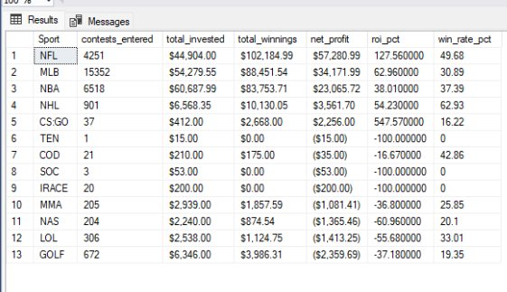

Analyzed 28,491 contest entries using Microsoft SQL Server to identify profit drivers. 10 complex analytical queries demonstrating CTEs, window functions, and aggregate analysis. 80% of $113,813 profit came from 7.68% first-place finishes.


The visualization of the Divvy Project presented in Tableau.

A lot of football statistics available at a quick glance.

Exploring COVID-19 data from the "Our World in Data" website.

How the virus is affecting different parts of the world.

Cleaning data in SQL that shows those home sales from the Nashville area.

A Breakdown of Ten Years of Inspections in Tableau.

Breaking Down Chicago City Jobs.

Compare Diffrent Types of Jobs and The Salary They Make.